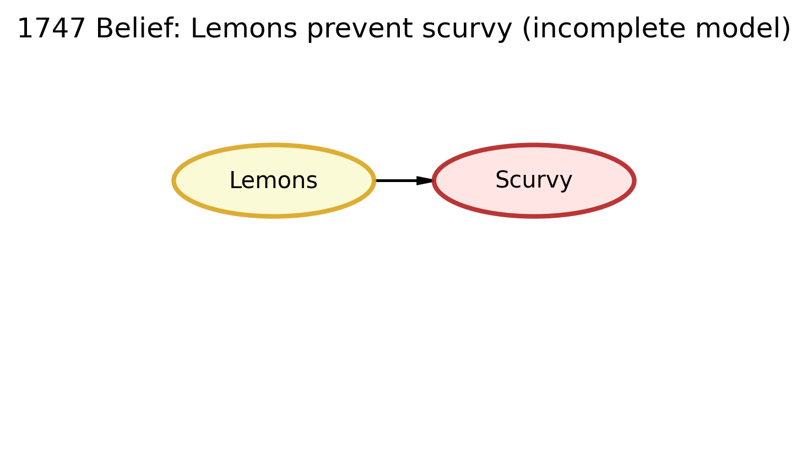
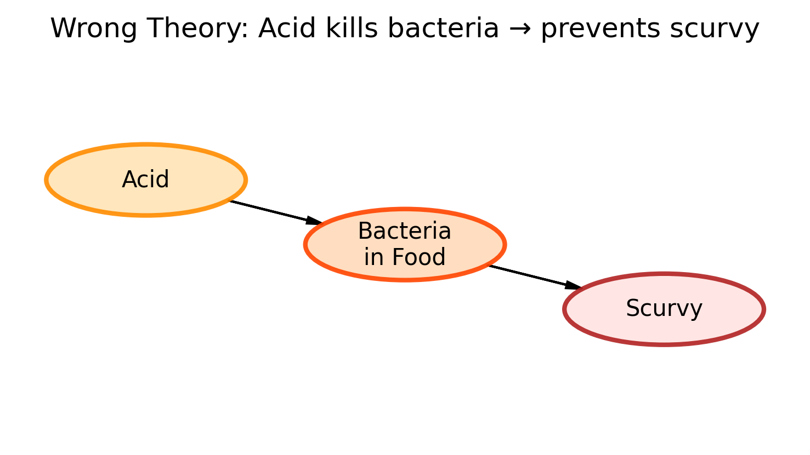
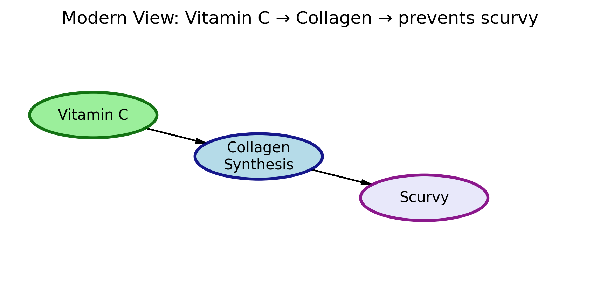

import os
import daft
import matplotlib.pyplot as plt
# Make output diagrams look crisp
plt.rcParams["figure.dpi"] = 150
plt.rcParams["savefig.dpi"] = 300
# Ensure output folder exists
os.makedirs("img", exist_ok=True)
def render_and_save(pgm, title, outfile):
"""
Render a DAFT PGM object, apply a title, save to PNG.
We'll call this for each DAG and then embed the saved image below.
"""
fig = plt.figure(figsize=(4,3))
pgm.render()
plt.title(title, fontsize=12)
plt.savefig(outfile, dpi=300, bbox_inches="tight")
plt.close(fig)DAFT Package Challenge
Recreating the Scurvy DAGs with Beautiful Visualizations
The Scurvy Causal Story
Scurvy was a deadly disease for sailors on long voyages. Their gums bled, their teeth fell out, their wounds didn’t heal, and many died.
The cure was basically discovered in 1747… then lost for 150+ years because people told the wrong story about why it worked. The real mechanism wasn’t nailed down until the late 1920s.
We’ll look at 3 historical explanations:
1747 belief: “Lemons prevent scurvy.” (This worked, but they didn’t know why.)
Wrong theory: “Acid kills bacteria in food, and that stops scurvy.” (This was wrong — and it brought scurvy back.)
Modern view (~1928+): “Vitamin C is required to build collagen. Without it, you get scurvy.” (This is the true mechanism.)
In each diagram (DAG), an arrow means “we believe this causes that.”
DAG 1: The 1747 Understanding (Correct but Incomplete)
What people believed in 1747: James Lind ran one of the first controlled medical experiments on British sailors with scurvy. He gave some sailors citrus (like lemons), and they recovered.
After that test, the belief was basically:
Lemons → prevent scurvy
This was practically right (citrus really does cure/prevent scurvy), but scientifically incomplete. They didn’t know why lemons worked yet. “Vitamin C” wasn’t discovered.
# DAG 1: 1747 belief
# Simple story: Lemons stop scurvy.
pgm_1747 = daft.PGM(
dpi=150,
shape=[4,3],
origin=[0,0],
alternate_style="outer"
)
# Lemons node
pgm_1747.add_node(
"lemons",
"Lemons",
1, 2,
aspect=2.8,
scale=1.1,
plot_params={
"facecolor": "lightgoldenrodyellow",
"edgecolor": "goldenrod",
"linewidth": 2,
"alpha": 0.9,
}
)
# Scurvy node
pgm_1747.add_node(
"scurvy",
"Scurvy",
3, 2,
aspect=2.8,
scale=1.1,
plot_params={
"facecolor": "mistyrose",
"edgecolor": "firebrick",
"linewidth": 2,
"alpha": 0.9,
}
)
# Arrow: Lemons -> Scurvy
# Interpreted at the time as:
# "Giving lemons prevents scurvy"
pgm_1747.add_edge("lemons", "scurvy")
# Save figure for embedding
render_and_save(
pgm_1747,
title="1747 Belief: Lemons prevent scurvy (incomplete model)",
outfile="img/dag_1747.png"
)
Why this model is incomplete: They knew lemons helped, but not why. They had no concept of vitamins yet, so they couldn’t explain the mechanism. This gap in understanding will become a problem later.
DAG 2: The Misguided Belief (Wrong Understanding)
What people believed later (bad theory): After a while, people changed the story. They said:
“It’s not the lemons. It’s the acid in lemons. The acid kills bacteria in rotten food, and that’s why sailors don’t get scurvy.”
That sounded logical, but it was wrong.
So the new (wrong) causal story was:
Acid → kills bacteria in food → no scurvy
That belief led to a big mistake: - Sailors were given cheap acidic stuff (like vinegar or weak limes) instead of real citrus with high Vitamin C. - Scurvy came back.
# DAG 2: Misguided belief
# Wrong story:
# Acid kills bacteria -> prevents scurvy
pgm_wrong = daft.PGM(
dpi=150,
shape=[6,3],
origin=[0,0],
alternate_style="outer"
)
# Acid node
pgm_wrong.add_node(
"acid",
"Acid",
1, 2,
aspect=2.8,
scale=1.1,
plot_params={
"facecolor": "moccasin",
"edgecolor": "darkorange",
"linewidth": 2,
"alpha": 0.9,
}
)
# Bacteria node
pgm_wrong.add_node(
"bacteria",
"Bacteria\nin Food",
3, 1.5,
aspect=2.8,
scale=1.1,
plot_params={
"facecolor": "peachpuff",
"edgecolor": "orangered",
"linewidth": 2,
"alpha": 0.9,
}
)
# Scurvy node
pgm_wrong.add_node(
"scurvy",
"Scurvy",
5, 1,
aspect=2.8,
scale=1.1,
plot_params={
"facecolor": "mistyrose",
"edgecolor": "firebrick",
"linewidth": 2,
"alpha": 0.9,
}
)
# Edges: Acid -> Bacteria -> Scurvy
pgm_wrong.add_edge("acid", "bacteria")
pgm_wrong.add_edge("bacteria", "scurvy")
# Save figure
render_and_save(
pgm_wrong,
title="Wrong Theory: Acid kills bacteria → prevents scurvy",
outfile="img/dag_wrong.png"
)
Why this model is wrong: Scurvy is not a food-poisoning / bacteria problem. It’s caused by lack of Vitamin C. When navies switched to “cheap acid but not real citrus,” sailors got scurvy again. This is why a wrong causal model literally put lives at risk.
DAG 3: The 1928+ Understanding (Complete and Correct)
What scientists finally figured out (~1928 and after): Scurvy happens because your body can’t build or repair collagen without Vitamin C.
So the correct mechanism is:
Vitamin C → enables collagen synthesis → prevents scurvy
Now we know exactly why citrus worked in 1747. It had Vitamin C.
# DAG 3: Modern correct chain
# Vitamin C -> Collagen synthesis -> (prevents) Scurvy
pgm_modern = daft.PGM(
dpi=150,
shape=[7,3],
origin=[0,0],
alternate_style="outer"
)
# Vitamin C node
pgm_modern.add_node(
"vitc",
"Vitamin C",
1, 2,
aspect=2.8,
scale=1.1,
plot_params={
"facecolor": "lightgreen",
"edgecolor": "darkgreen",
"linewidth": 2,
"alpha": 0.9,
}
)
# Collagen Synthesis node
pgm_modern.add_node(
"collagen",
"Collagen\nSynthesis",
3, 1.5,
aspect=2.8,
scale=1.1,
plot_params={
"facecolor": "lightblue",
"edgecolor": "navy",
"linewidth": 2,
"alpha": 0.9,
}
)
# Scurvy node
pgm_modern.add_node(
"scurvy",
"Scurvy",
5, 1,
aspect=2.8,
scale=1.1,
plot_params={
"facecolor": "lavender",
"edgecolor": "purple",
"linewidth": 2,
"alpha": 0.9,
}
)
# Edges: Vitamin C -> Collagen Synthesis -> Scurvy
pgm_modern.add_edge("vitc", "collagen")
pgm_modern.add_edge("collagen", "scurvy")
# Save figure
render_and_save(
pgm_modern,
title="Modern View: Vitamin C → Collagen → prevents scurvy",
outfile="img/dag_modern.png"
)
Why this is finally correct: - It explains why citrus worked in 1747 (Vitamin C). - It explains why “acid kills bacteria” was bogus. - It explains exactly how to prevent and cure scurvy.
This is the first model that gives the true biological mechanism, not just correlation.